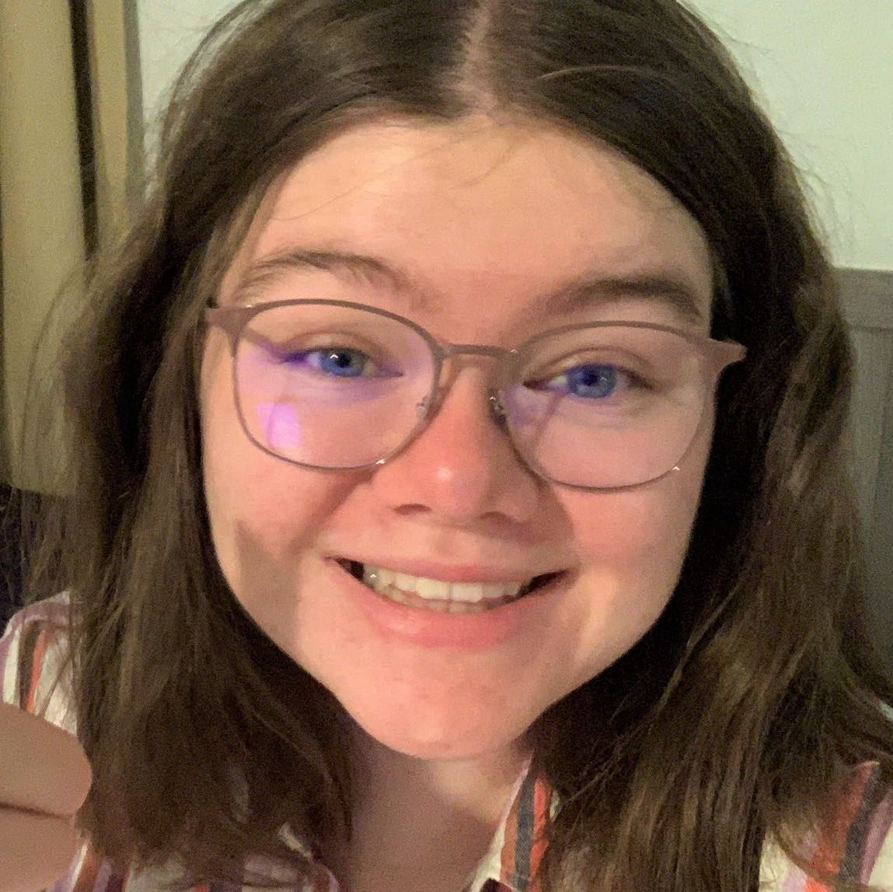

Howdy! I'm Kaitlyn Griffin. I am a Junior at Texas A&M University currently majoring in computer science with a minor in statistics.
In high school I was involved in UIL academics. I explored my interests through my involvement in UIL spelling, computer science, number sense, and science. I was on the competing team for computer science my junior year of high school. Participating in these activities caused me to realize that I am passionate about STEM and problem-solving. I entered college as a biology major, but I soon realized that my true calling was elsewhere. After spending a year as a biology major, I changed my major and transferred to computer science. This was the right choice for me, and I have found where my genuine interests lie.
In the summer of 2023, I went on a study abroad trip to Greece to take CSCE 411. The course focuses on the design and analysis of algorithms. During my time abroad I was able to overcome new challenges in an unknown environment and expand my world-view. It was a transformative experience that reinforced my passion for computer science and problem-solving. It also helped me understand the ways in which computer science is involved in many different fields across the globe.
I am interested in machine learning, data science, and databases.
I am always looking for ways to increase my involvement in the community on campus. I am the Director of Technology in my sorority, Alpha Omega Epsilon, a professional women's sorority. Additionally, I'm also involved with Aggie Coding Club. Through my participation in ACC, I intend to further build and strengthen my coding and collaboration skills.
As I continue to pursue my education and grow as a student and individual, I look forward to embracing new challenges, building strong connections, and making a meaningful impact on the world.
Thank you for taking the time to get to know me!